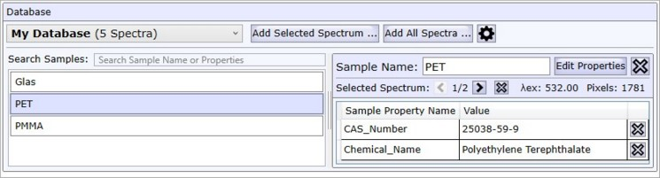
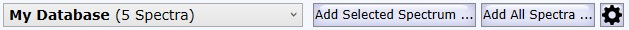
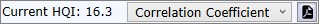
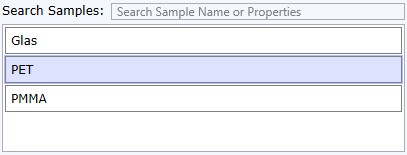
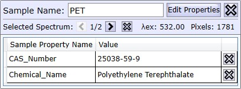
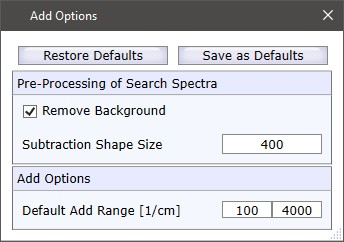

|
数据库编辑器
|

数据库编辑器 / 数据库查看器可用于浏览所有 已配置的数据库中的数据库光谱。
您还可以在自己的数据库中添加或删除样品/光谱。

"我的数据库" 数据库选择（组合框）
在此处您可以选择要浏览或添加光谱的目标数据库。
添加所选光谱
允许您将当前选定的用户光谱添加到选定的数据库中。
如果选中了某个样品，您可以将光谱添加到该现有样品中，或者创建一个新样品（软件会询问您）。
添加所有光谱
将所有用户光谱添加到数据库中，并使用每个用户光谱的名称作为新的样品名称。
在 WITec Project 中，您可以重命名单个光谱数据对象，因此此处使用该名称。
添加选项
请参阅 添加选项
当前 HQI

显示所选用户光谱与所选数据库光谱之间的 HQI。
在此处您还可以更改 HQI 算法并使用这两个光谱创建报告。

搜索样品
您可以在样品名称以及所有样品属性中进行搜索。
样品列表视图
在此处您可以选择其中一个样品。点击样品将显示该样品的第一个光谱（每个样品可以有多个光谱）。
在右侧，您可以查看所选样品的详细信息。

样品名称
如果选择了自定义数据库，您可以在此处更改样品名称。
编辑属性
您可以编辑样品属性，请参阅 样品属性编辑器。
所选光谱
如果同一样品存储了多个光谱，您可以浏览这些光谱。
显示关于所选光谱的一些信息：激发波长和像素数量。
样品属性列表
仅显示所有样品属性。您可以在此处删除属性，也可以通过取消选中样品属性编辑器中的"使用"复选框来删除。
添加选项
在此处您可以定义应添加光谱的哪一部分，以及是否应去除瑞利峰并进行背景扣除。

去除背景
如果选中，则在搜索之前进行背景扣除。扣除使用 WITec Project 的形状算法。
扣除形状大小
定义背景扣除的形状大小。较低的值将从峰中扣除更多细节。
默认添加范围
定义将添加到数据库中的默认范围。您可以在图谱查看器中操作掩模，以定义光谱的哪个范围应保存为数据库搜索光谱。
注意：未经预处理和区域的原始光谱将始终存储在数据库中，以便您在搜索后可以将其重新导入 WITec Project。
保存为默认值
将当前添加选项保存为默认值。
恢复默认值
加载默认值并覆盖当前设置。